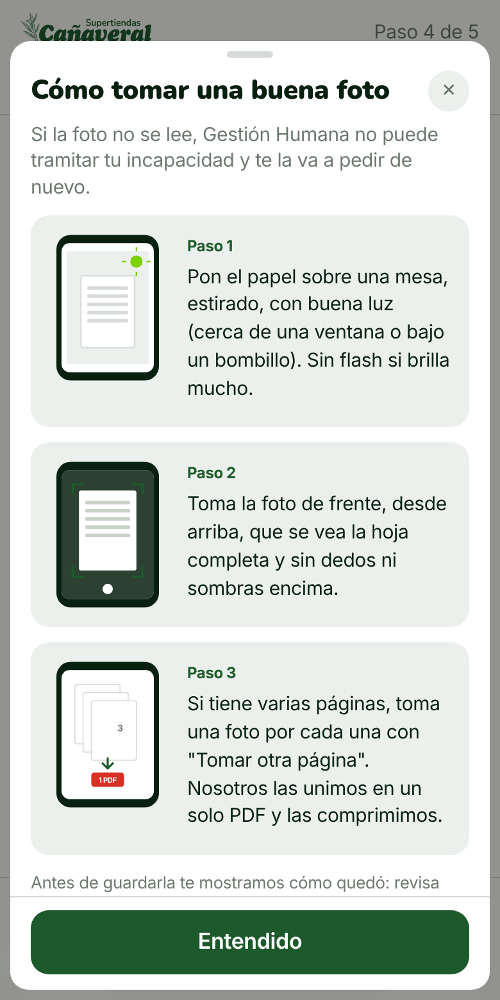

Antes de empezar
Ten a mano los papeles que te dieron. La página solo te pide los de tu caso.
| Qué vas a enviar | Documentos que te pide |
|---|---|
| 018 Enfermedad general | Incapacidad + historia clínica. Si fue accidente de tránsito, también el FURIPS (lo entrega la clínica). |
| 019 Accidente de trabajo | Incapacidad + historia clínica. Te pide también la fecha del accidente. |
| 020 Licencia de maternidad | Licencia + historia clínica + certificado de nacido vivo + registro civil del bebé. |
| 021 Licencia de paternidad | Licencia o incapacidad de la madre + historia clínica del parto + nacido vivo + registro civil + carta firmada (la página te la da lista). |
Puedes subir PDF o tomarle fotos
Con fotos
Una foto por página. La página las une en un solo PDF y te muestra cómo quedaron.
Con PDF
Si pesa mucho o tiene contraseña, la página lo arregla por ti.

Para que la foto se lea bien
- Pon el papel sobre una mesa, estirado, con buena luz.
- Tómala de frente, desde arriba, que se vea la hoja completa.
- Sin dedos ni sombras encima, y con el celular quieto.
- Revisa que se lean las fechas, los días y el diagnóstico.
En la página toca Cómo tomar una buena foto para ver estos consejos con dibujos.
Gestión Humana — Supertiendas Cañaveral S.A.S.2 / 6